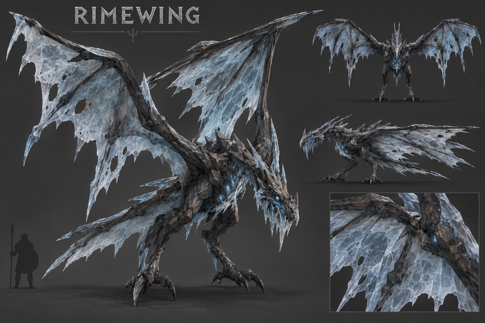

queued-concept-audit. pending actual concept/model inspection. User art acceptance: false.

Same normalized neutral lighting, owned surface maps and actual runtime topology. This is an offline material approximation; it does not establish Valheim appearance or animation acceptance.
Verified stored forward: -Z. Exporter: tools/export-model-assets.py: [x,z,-y]. The camera basis inverts this exporter before assigning front/rear labels.
1,068 triangles / 17 renderers / 3 materials. Native donor: Hatchling; measured triangles: pending.